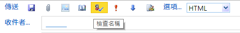

台 大 完 全 指 南
NTU Guide
今天是 ２０１７／８／１６
by ChingRu
道歉啟事
這份簡報可能會以台大為基礎
所以可能要跟台科大的同學說聲SorryQQ
可以去問另外一個帥哥學長
I NEED WIFI RRRR
馬斯洛需求金字塔第二層就是 wifi 啊
附帶一提，最下層是電池
NTU
會跑出一個網頁
之後輸入你的計中帳號密碼登入
ntu_peap

ntu_peap
在「身分」鍵入學號、「密碼」鍵入計中的密碼
在「EAP」選擇「PEAP」
「階段 2 驗證」請選擇「MSCHAPV2」
「CA 憑證」及「使用者憑證」選擇「未指定」
重要時程
重要時程
剩下的自己翻一翻行事曆
基本上記得啥時期中期末啥時放假就好
我在哪裡？
我是誰？
學號
每個人的學號都代表你的身分
Ｂ０５１０２０７４
| Ｂ | bachelor degree，學士 |
| ０５ | 105 學年度入學生 |
| １ | 院別，這裡是文學院 |
| ０２ | 系／組別，這裡是外文系 |
| ０７４ | 入學編號 |
院別和系別
| 文學 | 理學 | 社科 | 醫學 | 工學 | 生農 | 管理 | 公衛 | 電資 | 法律 | 生科 |
| １ | ２ | ３ | ４ | ５ | ６ | ７ | ８ | ９ | Ａ | Ｂ |
點我看系別的代號
那葛我要怎麼回家啊ＱＱ
你剛剛怎麼來的就怎麼回去啊
如果你要搭火車的話
從公館捷運站搭到中正廟
接著轉搭淡水信義（Ｒ）回台北車站
再搭回中壢／內壢／桃園等火車站
到了台北車站搭高鐵，再轉機捷可以到大園

如果你要搭公車的話
在基隆路上有
９００１ 經大溪，到中壢
９００９ 經國際路，到桃園
９０８９ 經八德大湳，到桃園
在羅斯福路、捷運站對面的公車道有
亞聯可以回龍潭和新竹
想要知道更多回龍潭的一百種方法來問我
欸欸台大好大喔ＱＱ
無用知識：台大是僅次於台糖，全台第二大的地主
所以你一定需要
一匹優秀的炫砲坐騎
如果可以的話用二手的就好
全新的有被幹走的可能喇我覺得
不過二手車市場很搶手，有車才是真的
那腳踏車哪裡買？
１）找要畢業的學長姊買二手車
２）上出清台大社團找二手車
３）去附近車行買全新的 大概＄２０００
４）熬夜去排水源的拼裝二手車 一台＄４００
５）自己騎上來啊
騎車要注意什麼？
１）記得要上網申請車證
不過我是被拖了之後去領車順便拿的
２）亂停車的話會被可怕的水源阿伯拖走喔！
３）拖車場又遠又熱，你不會想去的
４）被拖第三次之後都要付５０元保管費
５）在校外也會被交通大隊拖走喔！
還要去要去更遠的龍門國中領喔
一定要會
邊撐傘邊騎車
下雨天還是建議乾脆在宿舍睡覺吧
因為這真的蠻危險的
但這可以排進去大學生必備技能之一了
最重要的就是
小心三寶的騎乘技術
不過如果自己變做三寶就沒什麼好怕的了
我以後要住哪裡啊？
台大可以選擇住宿舍
或是
ＢＯＴ套房
學生宿舍
男一舍（四人房）混一舍 每學期＄８２００
大一女（四人房） 每學期＄９７００
包含水費（公共浴室）、電費
不含冷氣錢，自己要跟室友喬然後ｓｈａｒｅ
宿網有１１２ｉｐ，據說有限制一天６Ｇ
實際上一天傳１００Ｇ我試過好像也不會鎖
那如果我遇到很雷的室友怎麼辦...
半夜不睡覺的、愛用機械式鍵盤的、愛在房裡用樂器的、環境整潔被死當的...
無解，恭喜中大獎！！好好忍耐ㄅ^^
不過在這之前
先跟爸媽確認一下
你本人、你爹娘「三人」戶籍是否都
設於雙北、基隆市以外「滿兩年」以上
換句話說只要有一人的戶籍設在天龍區或未滿兩年
你就沒資格住宿舍喔
如果我被我爸或我媽的戶籍
ｇａｎｋ怎麼辦啦！！？？
害我沒宿舍住！！ｓｅｎ７７！！
你還有
ＢＯＴ可以住
水源ＢＯＴ（在水源校區）
長興ＢＯＴ（在長興街上）
單人房 每個月＄７４００
雙人房 每個月＄４９００
三人房 每個月＄４４００
看起來蠻高級的，而且還有獨立衛浴
只包含水費，不含電費、冷氣費、寒暑假也收費

學分是什麼？
你可以把他想成一種集點遊戲
只是要集滿點數才能畢業
學分有三種
必修：顧名思義就是一定要修才能畢業
選修：幾種課裡面選幾種，每個系都不一樣
通識：各系有指定領域，自己去系上網站查
通常一學分 = 上課一小時，每堂課都三到四學分
不過像實驗課這種一學分三小時的就...
我要畢業的話要修哪些學分？
通常系網都會有寫，注意入學年度適用
或是點我查詢
共同必修有哪些？
１）大學國文（原大一國文，至少三學分）
２）大一英文（上下共六學分）
３）大一體適能（上學期一學分）
４）服務學習（看系上安排，零學分）
不管你讀什麼系，都一定會要修這幾個
英文怎麼免修？
於８／１０～８／１８提出申請
１）全民英檢中高級通過
２）托福（TOEFL）９３分以上
３）雅斯（IELTS）６．５分以上
４）劍橋國際英語認證（FCE）Grade B 以上
選課是什麼？
要怎麼選課？
１）先把必修跟體適能選進去
２）把大一國文和大一英文的老師選好選滿
有些系可以用別的二外充當英文，自己查
然後外文系不用管大一英文
３）然後把通識、新生專題塞好塞滿
４）最後別忘記了最廢的服務學習
加簽的種類
會寫在台大課程網裡面，自己看清楚
第一類：不限人數、自己上網直接加選
第二類：跟老師要授權碼後上網填
第三類：有限人數，上網填再等抽籤
另外還有人工加簽、你追我躲、大地遊戲等等
我要怎麼知道一堂課的評價？
你可以問學長姊
或是上ＰＴＴ的ＮＴＵＣｏｕｒｓｅ版搜尋
如果不會用ＰＴＴ的話...等一下會講
先捫心自問想想
你是想選學的到東西但是很硬的課？
還是想要課很鬆，但是不知道在幹嘛的課？
所謂
| 甜的 | 就是分數都很高，多出現在通識和管院 |
| 涼的 | 就是上課很輕鬆，甚至只看出席給分數 |
| 扎實 | 有讀有分，沒讀沒分，分數靠自己能掌握 |
| 硬爆 | 好課值得一修再修，好老師直到一修再修 |
| 信仰 | 個人差嚴重，只有信仰十足的信徒能領會 |
又涼又甜？甜但不涼？涼但不甜？不良又不甜？
開玩笑，當然是甜課^^
實地演練一下
進入台大課程網
https://nol.ntu.edu.tw/nol/student/
正式選課
進入 台大網路選課系統
https://if177.aca.ntu.edu.tw/index.php
待補圖
先誠實的填寫「外語能力問卷調查」
待補圖
「匯入預選課程」，然後填寫志願序後登記
待補圖
完成之後會長這個樣子
接下來是選課常見的問題啦
我能修多少學分？
每學期最少應該修 15 個學分
如果特殊狀況要減修，要寫學生報告書
正常而言，最多可以修 25 個學分
若「當學期GPA > 3.9」，下學期可以超修到 31 學分
雙主修也可以超修到 31 學分
限制寫限本系可是我很想修怎麼辦？

還記得加簽嗎？
文組也可以簽微積分、理組也可以簽世界史
備註的統一教學是什麼意思？

大多是瀟灑的數學系開的微積分會這樣
就是所有的班的考試都統一進度
換句話說，要不要去上課、要聽哪個老師隨便你
考卷也都長的一樣
考試的時候回去原班考試就好惹
「戀愛巴士」是啥？
通識 A8 的「森林生物多樣性概論」
傳說中選上就有A+的課
會去山上五天四夜，看山看樹看星星
所以又稱戀愛巴士嘻嘻
什麼是「必帶」？
就是進階版的必修，直接出現在你的課表裡。
有些大系會拆班，必帶就是指定你的老師。
有的系可以退掉換老師、有的系不行，
建議自己問系上或你的學長姊。
早點選課、
志願序有差別嗎？
別擔心，完全沒有
跟填指考志願一樣，志願只跟自己比
第一天就跑去選課跟最後一天才選課其實沒差
全都靠電腦抽籤看運氣囉
沒選到課怎麼辦啦QQ
如果你在第一階段沒選到，你還有第二階段可以選
如果還是沒有，就只好第三週後跑加簽了
有的老師隨你簽，有的用抽的，有的完全不給簽
反正就是看老師跟助教的心情惹
ＰＴＴ
ＰＴＴ是什麼
telnet://ptt.cc
全台灣最大的論壇，沒有之一
全台灣最大的亂源，沒有之一
Ｐｔｔ跟台大有關的有ＮＴＵ（台大板）、
ＮＴＵＣｏｕｒｓｅ（課程評價板）、
ＤｏｕｂｌｅＭａｊｏｒ（雙轉輔板）、
ＮＴＵ－Ｅｘａｍ（考古題板）、
ＮＴＵ－Ｔｅｘｔｂｏｏｋ（二手教科書板）等
不會用的話就是你的損失了
更不用說還有許多莫名其妙的板，像是
Ｇｏｓｓｉｐｉｎｇ（八卦板）、
ｐａｒｔ－ｔｉｍｅ（打工板）、
Ｈｏｍｅｔｅａｃｈ（家教板）等等等
以及神奇的各種東西^^
值得你去尋找嘻嘻
所以要怎麼用啦？
如果要用電腦的話
因為ＰＴＴ是走 telnet 連線協議而非 http 協定
所以理論上不能用 firefox 或是 chrome 來連ＰＴＴ
當然，你還是可以透過 chrome 外掛來上ＰＴＴ
方法一
利用 PCMan
到 PCMan官網
http://pcman.ptt.cc/
下載並執行如果沒特別需求，lite 和 novus 其實都可以
方法二
利用 PTTChrome 擴充功能
點這裡
安裝，然後在應用程式內執行
方法三
直接透過網頁開啟
https://iamchucky.github.io/PttChrome/index.html
如果要用手機的話
自己上 play 商店、AppStore 搜尋 PTT 找相關 Apps
但其實 PTT 官方並沒有出任何官方的 Apps
請注意帳號安全
進去之後怎麼找板？


其他可能會用到的功能
★按 h 也可以查詢，但要注意都有區分大小寫
| 在板上搜尋作者 | a |
| 在板上搜尋推文數 | Z |
| 貼上 | alt + P |
| 複製 | alt + O |
| 推、噓、箭頭 | 在文章裡面按 X |
| 回文到板上 | 在文章裡按 y |
| 發表新文章 | 在板上按ctrl + P |
為什麼我不能發文或是推噓文啊？
因為你的帳號資格不夠
就是太菜逼八了啦
在你想發文的板板上按 i 可以查看發文限制

你可以從 (U)ser > (I)nfo 可以查看你的登入次數
一天就算登入一百次還是只能算一次喔
ＮＴＵ Ｍａｉｌ
台大學生都一定會有的信箱
所有跟學校有關的信都會寄到這裡來
他大概長這樣：
b05102074@ntu.edu.tw
信箱還可以用來找人！
當你使用學校的信箱時

只要在收件者鍵入你想找的學號
再按「檢查名稱」，就會跳出姓名惹。
用哪個收信？
最簡單的就是用學校的官方信箱
http://ntumail.cc.ntu.edu.tw/
（推薦）或這是你也可以用 gmail 來收信
為什麼要用 Gmail？
１）因為學校信箱介面真的太簡陋了
２）用 Gmail 之後，手機收到信會跳通知
３）你還可以讓 Chrome 也跳通知
４）總而言之我覺得這個比較好用喇


成績＝ＧＰＡ
ＧＰＡ是什麼？
ＧＰＡ就是一種分數轉換的等第標準
避免用百分制會崩潰ＱＱ
| A+ | A | A- | B+ | B | B- | C+ | C | C- | F |
| 4.3 | 4.0 | 3.7 | 3.3 | 3.0 | 2.7 | 2.3 | 2.2 | 1.7 | 0 |
| 95 | 87 | 82 | 78 | 75 | 70 | 68 | 65 | 60 | 50 |
ＧＰＡ很重要嗎？
廢話
以後出國交換、雙轉輔很多都只看ＧＰＡ喔
尤其是管院各Elite系，想雙轉沒書卷就是砲灰
哇可是我在選課的時候不小心選到地雷QQ
你可以停修！
停修是在加退選截止後唯一的停止修課方法
但是一學期只可以停修一科
而且會在成績單上註明你這科停修過
有「都市傳說」是會影響未來國外學校申請喔
還有什麼好說的啊
好用的fb社團
台大二手書 NTU second hand books
59 屆台大武友會
我上課要印講義耶
除了自己扛事務機到宿舍印
或是到男一舍 B1 有影印店
或是到校外找店家幫你印
其實每學期計中有 $100 的quo塔可以印喔！
還可以用這筆錢去 3D 列印（以公克計）
你不想用的話拜託分我用
考前惡補該去哪？
最棒的選擇就是總圖地下室自習區
部分區域有開放可以帶筆電
24 小時開放
（體感）恆溫 20 度
而且訊號超爛，讓你能用功讀書